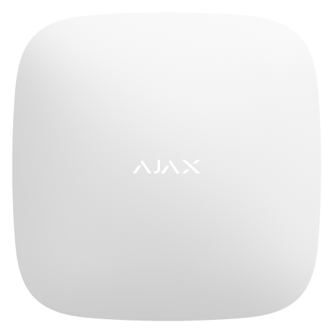

EN54 Fire ReX Jeweller
Prolongateurs de portée
Réf. fabricant FRX.54.J · Ajax Systems, marque partenaire
Sur devisÉtude, fourniture et installation par Active Sécurité 974
Prolongateur de portée du signal radio adressable sans fil pour un système d'alarme incendie
- Prend en charge la protection contre les intrusions
Cette référence n’est pas proposée sur le site Ajax France à ce jour. Sa disponibilité à La Réunion sera confirmée lors de l’étude de votre devis.
- Étude et devis gratuits, sans engagement
- Installation chez vous, partout à La Réunion
- Partenaire agréé Ajax Systems
Caractéristiques
En bref.
Données issues de la fiche officielle du fabricant, reformulées. Fiche constructeur (nouvel onglet)
| Modèle | EN54 Fire ReX Jeweller |
|---|---|
| Référence fabricant | FRX.54.J |
| Gamme | EN54 Line |
| Type | Prolongateurs de portée |
| Points clés |
|
| Coloris officiels | Noir, Blanc |
| Prix | Sur devis |
| Disponibilité | Disponibilité à confirmer |
Dans la même famille
Autres produits.
